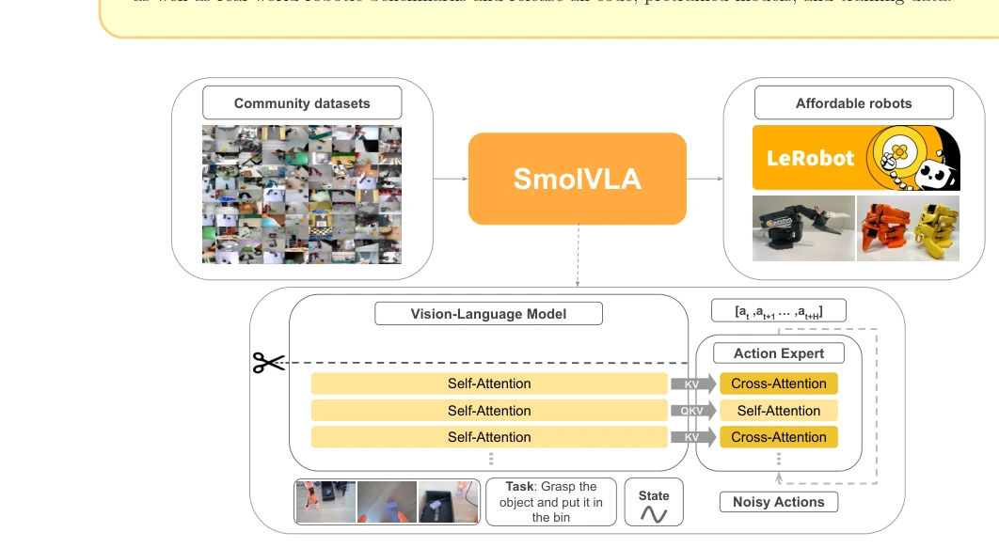
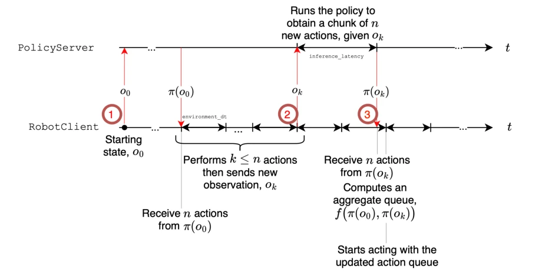
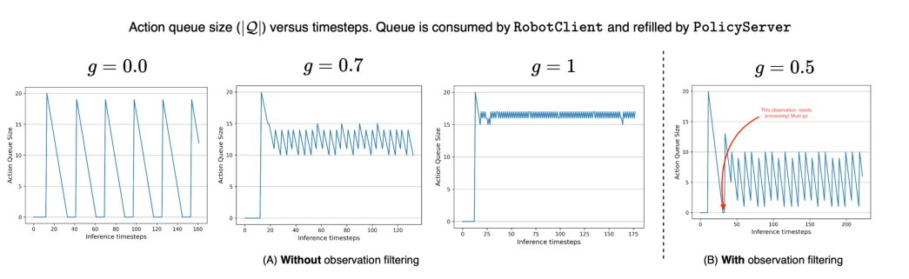
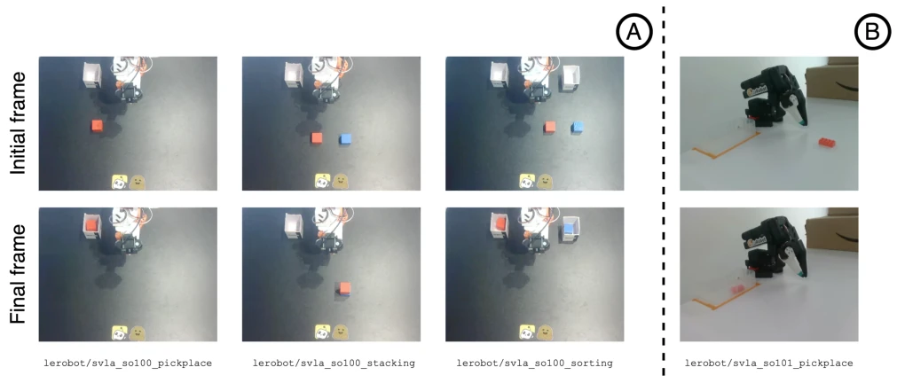

This paper brings a "fresh breeze" to the crowded VLA track, emphasizing "small but beautiful". SmolVLA is indeed clever, halving the layers of large models and saturating them with community data, yet surprisingly managing to compete head-to-head with giants like π0 with 3 billion parameters on LIBERO and Meta-World. However, despite being "Smol", it is essentially imitation learning wrapped in a VLM guise, where tolerance for noise in community data remains a potential risk. Although asynchronous inference is fast, decoupling prediction and execution raises concerns: what if network jitter occurs? Furthermore, although claimed to be single-card training, 30k GPU hours is still a significant amount. Moreover, community data cleaning relies entirely on VLM automatic annotation, which is somewhat of a "black box"; if annotations are erroneous, the model may learn incorrectly. Overall, this is like gifting a "second-hand Ferrari" to labs with limited budgets: performance is good, but one must know how to repair it.
研究动机Motivation
当前 VLA 模型普遍存在“大而不当”的问题。虽然 π0 (Black et al., 2024) 和 OpenVLA (Kim et al., 2024) 展示了开源潜力，但参数量动辄数十亿，训练和推理成本高昂，难以在消费级硬件部署，导致研究资源集中在少数大厂手中。此外，现有工作多依赖昂贵的工业级机器人数据，忽视了社区收集的廉价机器人数据（如 SO-100）的潜力。Brohan et al. (2023) 的 RT-2 虽利用 VLM 知识，但训练资源消耗巨大。SmolVLA 旨在解决这些痛点：通过轻量化架构和开源社区数据，降低门槛，实现高效、可复现的具身智能，让普通实验室也能玩转 VLA。
Current VLA models generally suffer from the problem of being "large but unwieldy". Although π0 (Black et al., 2024) and OpenVLA (Kim et al., 2024) demonstrate open-source potential, parameter counts often reach billions, making training and inference costs high and deployment on consumer-grade hardware difficult, leading to research resources concentrating in the hands of a few major companies. Additionally, existing work mostly relies on expensive industrial-grade robot data, overlooking the potential of low-cost robot data collected by the community (such as SO-100). Although RT-2 by Brohan et al. (2023) leverages VLM knowledge, it consumes massive training resources. SmolVLA aims to address these pain points: by utilizing a lightweight architecture and open-source community data, it lowers the barrier to entry, achieving efficient and reproducible embodied intelligence, enabling ordinary laboratories to also work with VLA.
SmolVLA adopts a "Perception-Decision" dual-module architecture. First, the VLM component selects SmolVLM-2 as the backbone, limiting visual tokens to 64 per frame by skipping the latter half of the network (N=L/2) and applying pixel shuffling, significantly reducing computational load. Second, the Action Expert is trained using Flow Matching, outputting action chunks; its core innovation lies in alternating between cross-attention (CA) and self-attention (SA) layers, rather than a traditional single structure, to balance feature fusion and action smoothness. Compared to Diffusion, Flow Matching requires fewer inference steps; combined with the CA/SA alternating structure, this enables the model to reduce computational redundancy while maintaining action coherence. Finally, an asynchronous inference stack is introduced to decouple action prediction and execution. The client maintains an action queue; when the queue drops below threshold g, new observation upload is triggered, while joint space similarity is utilized to filter duplicate observations, avoiding redundant computation. This design ensures real-time performance while permitting heavy inference on remote servers, achieving efficient control in resource-constrained scenarios.

Figure 1 ∣SmolVLA. SmolVLA consists of a compact pretrained vision-language model, discarding the last L −N layers (scissors icon). The remaining layers embed three inputs: (i) language instruction, (ii) RGB image(s), and (iii) robot sensorimotor state. Their merged tokens feed an Action Expert of alternating cross-attention (gold) and self-attention (light yellow) blocks, trained with flow matching to output n low-level actions chunk at, . . . , at+n. SmolVLA is pretrained on public community datasets and evaluated on low-cost robots.

Figure 2 ∣Asynchronous inference. Illustration of the asynchronous inference stack. Note that the policy can be run on a remote server, possibly with GPUs.
Experiments cover simulation (LIBERO, Meta-World) and real-world (SO-100, SO-101). Baselines include π0 (Black et al., 2024) and ACT (Zhao et al., 2023). SmolVLA (0.45B) achieves an average success rate of 87.3% on LIBERO, surpassing π0 (3.3B)'s 86.0%. In real-world tasks, multi-task fine-tuning combined with community pre-training significantly improves performance (51.7% -> 78.3%). Compared to synchronous mode, asynchronous inference shortens task completion time by 30%, and the number of tasks completed per unit time doubles. Ablation studies indicate that skipping VLM layers and the asynchronous queue mechanism contribute significantly to efficiency, though the impact of network latency on asynchronous mode requires attention. It performs robustly in OOD testing on SO-101, demonstrating generalization capability.

Figure 3 ∣Action queue size evolution at runtime for various levels of g when (A) not filtering out observation based on joint-space similarity and (B) filtering out near-duplicates observation, measuring their similarity in joint-space.

Figure 4 ∣Illustrations of the four real-world tasks we benchmark SmolVLA against, presenting starting and terminal frame for each of the dataset considered, for both SO100 embodiments (A) and SO101 (B). For SO100, we use top and wrist cameras, where for SO101 we use top and side cameras (as seen in the images).